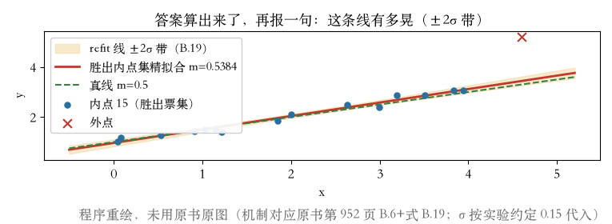
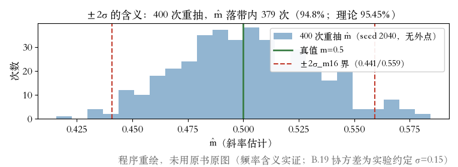
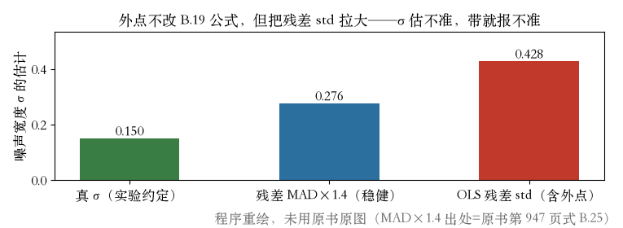

不确定度
答案算出来了，它有多确定
- 换一批数据重跑，答案会晃；这个晃法叫协方差。
- 书上第 952 页：很多应用要估不确定度。
- 最一般的完整概率分布通常算不动。
- 线性高斯：后验是多维高斯，协方差=噪声加权海塞的逆。
依据：原书第 952 页
本集三步
一算：线性高斯特例
二验：±2σ 带覆盖率
三看：算不动怎么办
式 B.19
一条式子，报出误差棒
- 书上第 945 页：B.19 用测量矩阵和测量噪声算协方差。
- 转置、乘测量协方差的逆、再乘测量矩阵，求和取逆。
- 直线拟合的测量矩阵只有一行：横坐标 x 和 1。
- 本集 15 票集：m=0.54、b=0.96，σ_m≈0.03、σ_b≈0.07。
依据：原书第 945/952 页；本集实验

±2σ 预测带：参数带宽 2σ_m=0.06 / 2σ_b=0.14｜程序生成，未用教材或论文原图
覆盖率
四百次重抽，九成五罩得住
- 固定 16 个内点的横坐标，只重抽噪声，跑 400 次。
- 判据带宽按同一布局现算；外点不进实验。
- 斜率落带内 379 次，截距 382 次，约九成五。
- 完整协方差可能太大：只报方差、个别参数，或用特征值分析找主方向。
依据：原书第 952 页；本集实验

400 次重抽：落带内 379/382（94.8% / 95.5%）｜程序生成，未用教材或论文原图
主方向与下界
晃向哪里，噪声估得准吗
- 最大特征值方向与绕质心转线方向，夹角余弦 0.99。
- 非线性时，最优解附近估海塞，克拉默-拉奥下界取它的逆。
- 带宽不会比局部二次近似更小；实际只会一样或更晃。
- 外点不改 B.19 公式，只污染噪声估计：残差 std 0.43、MAD×1.4 0.28、真值 0.15。
依据：原书第 952 页；本集实验

σ 三估计：OLS 0.43 / MAD×1.4 0.28 / 真 0.15｜程序生成，未用教材或论文原图
谁在用
谁在算，算来做什么
- 书上第 952 页：很多应用不算不确定度，但算一算能知道估计有多可靠。
- 卡尔曼滤波必须算：新旧估计融合靠它。
- 脚注：经典摄影测量里，报告精度几乎总被视为必须。
- 作业两道：造已知真值数据复算覆盖率；把 σ 换成 MAD×1.4 再算带宽。
依据：原书第 952 页
作业两道
一：已知真值，复算 ±2σ 覆盖率
二：σ 换 MAD×1.4，看带宽变化
对照：九成五
收束
有多确定，有式可报
- 估计值旁边要配一句：有多确定。
- 线性高斯：协方差=噪声加权海塞的逆；±2σ 带实测罩住九成五。
- 非线性：最优解附近海塞的逆，是不确定度的下界。
- 下一集：测量非线性时，方程组用非线性最小二乘迭代着解。
依据：原书第 952/945 页